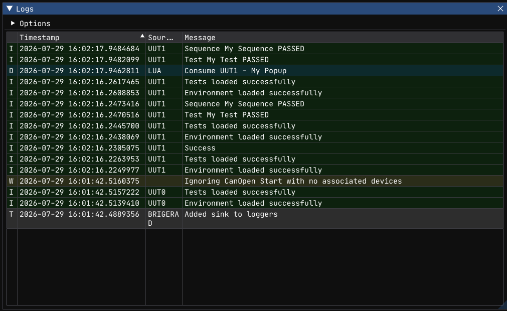

Log Window¶

The Log Window displays a real-time stream of application log messages. It shows output from
the framework, the orchestrator, CANopen communication, and your Lua test scripts
(Log.D/I/W/E).
Hotkey: F2
Overview¶
The Log Window presents log entries in a table with five columns:
| Column | Description |
|---|---|
| Level | Severity (T, D, I, W, E, C) |
| Timestamp | When the message was produced |
| Source | Logger name (e.g., UUT1, SlCan, Frasy) |
| Message | The log message content |
| Location | Source file/function and line number |
Entries are color-coded by severity:
| Level | Color | Meaning |
|---|---|---|
| Trace | Light gray | Extremely verbose internal diagnostics |
| Debug | Cyan | Development-time information |
| Info | Green | Normal operational messages |
| Warning | Yellow | Unexpected but non-fatal situations |
| Error | Red | Failures affecting test results |
| Critical | Bright red (white text) | Unrecoverable errors |
Features¶
Scrolling¶
When AutoScroll is enabled (default), the window always scrolls to the newest entry. Disable it to freeze the view and inspect older messages.
Column Visibility¶
Right-click the table header to show or hide columns. You can toggle:
- Timestamp
- Source (logger name)
- Location (source file/line)
The Level and Message columns are always visible.
Column Reordering and Resizing¶
Drag column headers to reorder them. Drag column borders to resize.
Options¶
Expand the Options tree at the top of the panel to configure per-logger log levels.
Each registered logger (e.g., UUT1, SlCan, Frasy, APP) appears with a dropdown to set
its minimum level. Messages below the selected level are hidden.
| Level | Value | Passes Through |
|---|---|---|
| Trace | 0 | Everything |
| Debug | 1 | Debug and above |
| Info | 2 | Info and above |
| Warn | 3 | Warn and above |
| Error | 4 | Error and above |
| Critical | 5 | Critical only |
Changes are persisted to config.json immediately.
Display Modes¶
Combined (Default)¶
All loggers are shown in a single unified list. The Source column identifies which logger produced each entry. This is the best mode for seeing the overall flow of execution.
Separate¶
Each logger gets its own tab. Switch between tabs to focus on a specific logger's output. Useful when debugging a specific subsystem (e.g., only CANopen traffic).
The mode is controlled by the CombineLoggers config option.
Source Location Styles¶
The Location column can render source information in different formats:
| Style | Format | Example |
|---|---|---|
| Function | {function} |
MeasureVoltage |
| Function + Line | {function}:{line} |
MeasureVoltage:42 |
| File | {file} |
daq.lua |
| File + Line | {file}:{line} |
daq.lua:42 |
| All (default) | {function}:{line} ({file}) |
MeasureVoltage:42 (daq.lua) |
Configure via SourceLocationRenderStyle in config.json (values 0–4).
Configuration¶
The Log Window's state is stored in the LogWindow key of config.json:
"LogWindow": {
"AutoScroll": true,
"CombineLoggers": true,
"EntriesToShow": 4096,
"ShowLevels": [true, true, true, true, true, true, true],
"Loggers": {
"SlCan": 2
},
"ShowLogSource": true,
"ShowSourceLocation": true,
"ShowTimeStamp": true,
"SourceLocationRenderStyle": 4
}
| Key | Type | Default | Description |
|---|---|---|---|
AutoScroll |
bool | true |
Auto-scroll to newest entry |
CombineLoggers |
bool | true |
Show all loggers in one view vs. separate tabs |
EntriesToShow |
int | 4096 |
Max entries kept in memory (circular buffer) |
ShowLevels |
bool[7] | all true | Per-level visibility toggles |
Loggers |
object | {} |
Per-logger minimum level overrides |
ShowLogSource |
bool | true |
Show the Source column |
ShowSourceLocation |
bool | true |
Show the Location column |
ShowTimeStamp |
bool | true |
Show the Timestamp column |
SourceLocationRenderStyle |
int | 4 |
Location format (0–4, see table above) |
Tips¶
- Reduce noise with per-logger levels. Set
SlCantoinfoorwarnif low-level communication traffic is drowning out test messages. - Use the filter during debugging. Type a test name or measurement label to quickly find relevant entries.
- Increase
EntriesToShowfor long runs. If you're running hundreds of tests and need to scroll back, increase the buffer size (at the cost of memory). - Open with F2 after a failure. The Log Window often contains the first clue about what went wrong — hardware timeouts, assertion details, or error messages from the framework.
See Also¶
- Logging —
Log.D/I/W/EAPI reference - Configuration — full
config.jsondocumentation